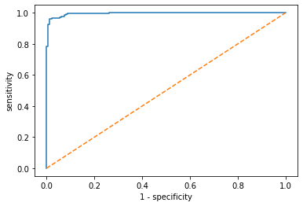

# import important modules
from sklearn.datasets import load_breast_cancer
import pandas as pd
from sklearn.linear_model import LogisticRegression
from sklearn.model_selection import train_test_split
from sklearn.metrics import roc_curve
import matplotlib.pyplot as plt
# Determines how many columns should be displayed on the output data
pd.options.display.max_columns = 30Introduction to Logistic Regression
Used when we have to choose between 2 values, in this case choosing between malignant and benign. The regression produces an S shape graph assumptions of logistic regression:
- There should not be any multi_collinearity in the model, which means the features must be independent of each other.
- We must include meaningful variables in our model
- We should choose a lage sample size for our logisitic regression
Solvers -> liblinear => is for multiclass classifiers
Load the dataset, which comes with Scikit Learn and explore information about the data
# Loading the dataframe of breast cancer from sklearn.datasets
breast_cancer_dataset = load_breast_cancer()
breast_cancer = pd.DataFrame(breast_cancer_dataset.data, columns=breast_cancer_dataset.feature_names)
breast_cancer['result'] = breast_cancer_dataset['target']
# Give a detailed description of the dataset
print(breast_cancer_dataset.keys())
print(breast_cancer_dataset['DESCR'])dict_keys(['data', 'target', 'frame', 'target_names', 'DESCR', 'feature_names', 'filename'])
.. _breast_cancer_dataset:
Breast cancer wisconsin (diagnostic) dataset
--------------------------------------------
**Data Set Characteristics:**
:Number of Instances: 569
:Number of Attributes: 30 numeric, predictive attributes and the class
:Attribute Information:
- radius (mean of distances from center to points on the perimeter)
- texture (standard deviation of gray-scale values)
- perimeter
- area
- smoothness (local variation in radius lengths)
- compactness (perimeter^2 / area - 1.0)
- concavity (severity of concave portions of the contour)
- concave points (number of concave portions of the contour)
- symmetry
- fractal dimension ("coastline approximation" - 1)
The mean, standard error, and "worst" or largest (mean of the three
worst/largest values) of these features were computed for each image,
resulting in 30 features. For instance, field 0 is Mean Radius, field
10 is Radius SE, field 20 is Worst Radius.
- class:
- WDBC-Malignant
- WDBC-Benign
:Summary Statistics:
===================================== ====== ======
Min Max
===================================== ====== ======
radius (mean): 6.981 28.11
texture (mean): 9.71 39.28
perimeter (mean): 43.79 188.5
area (mean): 143.5 2501.0
smoothness (mean): 0.053 0.163
compactness (mean): 0.019 0.345
concavity (mean): 0.0 0.427
concave points (mean): 0.0 0.201
symmetry (mean): 0.106 0.304
fractal dimension (mean): 0.05 0.097
radius (standard error): 0.112 2.873
texture (standard error): 0.36 4.885
perimeter (standard error): 0.757 21.98
area (standard error): 6.802 542.2
smoothness (standard error): 0.002 0.031
compactness (standard error): 0.002 0.135
concavity (standard error): 0.0 0.396
concave points (standard error): 0.0 0.053
symmetry (standard error): 0.008 0.079
fractal dimension (standard error): 0.001 0.03
radius (worst): 7.93 36.04
texture (worst): 12.02 49.54
perimeter (worst): 50.41 251.2
area (worst): 185.2 4254.0
smoothness (worst): 0.071 0.223
compactness (worst): 0.027 1.058
concavity (worst): 0.0 1.252
concave points (worst): 0.0 0.291
symmetry (worst): 0.156 0.664
fractal dimension (worst): 0.055 0.208
===================================== ====== ======
:Missing Attribute Values: None
:Class Distribution: 212 - Malignant, 357 - Benign
:Creator: Dr. William H. Wolberg, W. Nick Street, Olvi L. Mangasarian
:Donor: Nick Street
:Date: November, 1995
This is a copy of UCI ML Breast Cancer Wisconsin (Diagnostic) datasets.
https://goo.gl/U2Uwz2
Features are computed from a digitized image of a fine needle
aspirate (FNA) of a breast mass. They describe
characteristics of the cell nuclei present in the image.
Separating plane described above was obtained using
Multisurface Method-Tree (MSM-T) [K. P. Bennett, "Decision Tree
Construction Via Linear Programming." Proceedings of the 4th
Midwest Artificial Intelligence and Cognitive Science Society,
pp. 97-101, 1992], a classification method which uses linear
programming to construct a decision tree. Relevant features
were selected using an exhaustive search in the space of 1-4
features and 1-3 separating planes.
The actual linear program used to obtain the separating plane
in the 3-dimensional space is that described in:
[K. P. Bennett and O. L. Mangasarian: "Robust Linear
Programming Discrimination of Two Linearly Inseparable Sets",
Optimization Methods and Software 1, 1992, 23-34].
This database is also available through the UW CS ftp server:
ftp ftp.cs.wisc.edu
cd math-prog/cpo-dataset/machine-learn/WDBC/
.. topic:: References
- W.N. Street, W.H. Wolberg and O.L. Mangasarian. Nuclear feature extraction
for breast tumor diagnosis. IS&T/SPIE 1993 International Symposium on
Electronic Imaging: Science and Technology, volume 1905, pages 861-870,
San Jose, CA, 1993.
- O.L. Mangasarian, W.N. Street and W.H. Wolberg. Breast cancer diagnosis and
prognosis via linear programming. Operations Research, 43(4), pages 570-577,
July-August 1995.
- W.H. Wolberg, W.N. Street, and O.L. Mangasarian. Machine learning techniques
to diagnose breast cancer from fine-needle aspirates. Cancer Letters 77 (1994)
163-171.In order to know what the target set represents, output is -> [‘malignant’ ‘benign’] showing that a 0=>malignant and 1=>benign
print(breast_cancer_dataset['target_names'])['malignant' 'benign']Exploration of features..
breast_cancer.describe()| mean radius | mean texture | mean perimeter | mean area | mean smoothness | mean compactness | mean concavity | mean concave points | mean symmetry | mean fractal dimension | radius error | texture error | perimeter error | area error | smoothness error | ... | concavity error | concave points error | symmetry error | fractal dimension error | worst radius | worst texture | worst perimeter | worst area | worst smoothness | worst compactness | worst concavity | worst concave points | worst symmetry | worst fractal dimension | result | |
|---|---|---|---|---|---|---|---|---|---|---|---|---|---|---|---|---|---|---|---|---|---|---|---|---|---|---|---|---|---|---|---|
| count | 569.000000 | 569.000000 | 569.000000 | 569.000000 | 569.000000 | 569.000000 | 569.000000 | 569.000000 | 569.000000 | 569.000000 | 569.000000 | 569.000000 | 569.000000 | 569.000000 | 569.000000 | ... | 569.000000 | 569.000000 | 569.000000 | 569.000000 | 569.000000 | 569.000000 | 569.000000 | 569.000000 | 569.000000 | 569.000000 | 569.000000 | 569.000000 | 569.000000 | 569.000000 | 569.000000 |
| mean | 14.127292 | 19.289649 | 91.969033 | 654.889104 | 0.096360 | 0.104341 | 0.088799 | 0.048919 | 0.181162 | 0.062798 | 0.405172 | 1.216853 | 2.866059 | 40.337079 | 0.007041 | ... | 0.031894 | 0.011796 | 0.020542 | 0.003795 | 16.269190 | 25.677223 | 107.261213 | 880.583128 | 0.132369 | 0.254265 | 0.272188 | 0.114606 | 0.290076 | 0.083946 | 0.627417 |
| std | 3.524049 | 4.301036 | 24.298981 | 351.914129 | 0.014064 | 0.052813 | 0.079720 | 0.038803 | 0.027414 | 0.007060 | 0.277313 | 0.551648 | 2.021855 | 45.491006 | 0.003003 | ... | 0.030186 | 0.006170 | 0.008266 | 0.002646 | 4.833242 | 6.146258 | 33.602542 | 569.356993 | 0.022832 | 0.157336 | 0.208624 | 0.065732 | 0.061867 | 0.018061 | 0.483918 |
| min | 6.981000 | 9.710000 | 43.790000 | 143.500000 | 0.052630 | 0.019380 | 0.000000 | 0.000000 | 0.106000 | 0.049960 | 0.111500 | 0.360200 | 0.757000 | 6.802000 | 0.001713 | ... | 0.000000 | 0.000000 | 0.007882 | 0.000895 | 7.930000 | 12.020000 | 50.410000 | 185.200000 | 0.071170 | 0.027290 | 0.000000 | 0.000000 | 0.156500 | 0.055040 | 0.000000 |
| 25% | 11.700000 | 16.170000 | 75.170000 | 420.300000 | 0.086370 | 0.064920 | 0.029560 | 0.020310 | 0.161900 | 0.057700 | 0.232400 | 0.833900 | 1.606000 | 17.850000 | 0.005169 | ... | 0.015090 | 0.007638 | 0.015160 | 0.002248 | 13.010000 | 21.080000 | 84.110000 | 515.300000 | 0.116600 | 0.147200 | 0.114500 | 0.064930 | 0.250400 | 0.071460 | 0.000000 |
| 50% | 13.370000 | 18.840000 | 86.240000 | 551.100000 | 0.095870 | 0.092630 | 0.061540 | 0.033500 | 0.179200 | 0.061540 | 0.324200 | 1.108000 | 2.287000 | 24.530000 | 0.006380 | ... | 0.025890 | 0.010930 | 0.018730 | 0.003187 | 14.970000 | 25.410000 | 97.660000 | 686.500000 | 0.131300 | 0.211900 | 0.226700 | 0.099930 | 0.282200 | 0.080040 | 1.000000 |
| 75% | 15.780000 | 21.800000 | 104.100000 | 782.700000 | 0.105300 | 0.130400 | 0.130700 | 0.074000 | 0.195700 | 0.066120 | 0.478900 | 1.474000 | 3.357000 | 45.190000 | 0.008146 | ... | 0.042050 | 0.014710 | 0.023480 | 0.004558 | 18.790000 | 29.720000 | 125.400000 | 1084.000000 | 0.146000 | 0.339100 | 0.382900 | 0.161400 | 0.317900 | 0.092080 | 1.000000 |
| max | 28.110000 | 39.280000 | 188.500000 | 2501.000000 | 0.163400 | 0.345400 | 0.426800 | 0.201200 | 0.304000 | 0.097440 | 2.873000 | 4.885000 | 21.980000 | 542.200000 | 0.031130 | ... | 0.396000 | 0.052790 | 0.078950 | 0.029840 | 36.040000 | 49.540000 | 251.200000 | 4254.000000 | 0.222600 | 1.058000 | 1.252000 | 0.291000 | 0.663800 | 0.207500 | 1.000000 |
8 rows × 31 columns
breast_cancer.info()<class 'pandas.core.frame.DataFrame'>
RangeIndex: 569 entries, 0 to 568
Data columns (total 31 columns):
# Column Non-Null Count Dtype
--- ------ -------------- -----
0 mean radius 569 non-null float64
1 mean texture 569 non-null float64
2 mean perimeter 569 non-null float64
3 mean area 569 non-null float64
4 mean smoothness 569 non-null float64
5 mean compactness 569 non-null float64
6 mean concavity 569 non-null float64
7 mean concave points 569 non-null float64
8 mean symmetry 569 non-null float64
9 mean fractal dimension 569 non-null float64
10 radius error 569 non-null float64
11 texture error 569 non-null float64
12 perimeter error 569 non-null float64
13 area error 569 non-null float64
14 smoothness error 569 non-null float64
15 compactness error 569 non-null float64
16 concavity error 569 non-null float64
17 concave points error 569 non-null float64
18 symmetry error 569 non-null float64
19 fractal dimension error 569 non-null float64
20 worst radius 569 non-null float64
21 worst texture 569 non-null float64
22 worst perimeter 569 non-null float64
23 worst area 569 non-null float64
24 worst smoothness 569 non-null float64
25 worst compactness 569 non-null float64
26 worst concavity 569 non-null float64
27 worst concave points 569 non-null float64
28 worst symmetry 569 non-null float64
29 worst fractal dimension 569 non-null float64
30 result 569 non-null int32
dtypes: float64(30), int32(1)
memory usage: 135.7 KBThe dataset does not include any null or missing values so there won’t be any need for data wrangling (dealing with missing values).
X = breast_cancer.values
y = breast_cancer['result'].valuesIt is also possible to instantiate X and y without .values (.values changes the Dataframe to a numpy array)
For good training and testing the dataset, we should split our data. We are going to split our data into 70% training size and 30% test size. It’s more convenient to test our dataset with the small portion of the dataset, but it shouldn’t be too small.
X_train, X_test, y_train, y_test = train_test_split(X, y, test_size=0.7, random_state=1)
model = LogisticRegression(solver='liblinear')
model.fit(X_train, y_train)LogisticRegression(solver='liblinear')If we try to fit using the default solver, we get a convergence warning meaning the model needs more time to find the optimal solution, This can be solved by using a different solver. In this instance we shall use the ‘liblinear’ solver.
y_pred = model.predict(X_test)from sklearn.metrics import accuracy_score, precision_score, recall_score, f1_score
# each function takes two 1-dimensional numpy arrays: the true values and the predicted values of the target
print("accuracy: ", accuracy_score(y_test, y_pred))
print("precision: ", precision_score(y_test, y_pred))
print("recall: ", recall_score(y_test, y_pred))
print("f1_score: ", f1_score(y_test, y_pred))
# using scikit-learn we are able to get the four values in the confusion matrix
from sklearn.metrics import confusion_matrix
print(confusion_matrix(y_test, y_pred))accuracy: 0.9624060150375939
precision: 0.95703125
recall: 0.9839357429718876
f1_score: 0.9702970297029703
[[139 11]
[ 4 245]]All of the metric calculations show good scores which means that our Logistic Regression model is good
# USING ROC CURVE #An ROC curve (receiver operating characteristic curve) is a graph showing the performance of a classification model at all classification thresholds. The ROC curve is a graph of the specificity vs sensitivity i.e specificity is the % actual negatives correctly predicted and sensitivity being the % actual positives correctly predicted.
y_pred_proba = model.predict_proba(X_test)
fpr, tpr, thresholds = roc_curve(y_test, y_pred_proba[:, 1])
plt.plot(fpr, tpr)
plt.plot([0, 1], [0, 1], linestyle='--')
# plt.xlim(0.0, 1.0)
# plt.ylim(0.0, 1.0)
plt.xlabel('1 - specificity')
plt.ylabel('sensitivity')
plt.show()